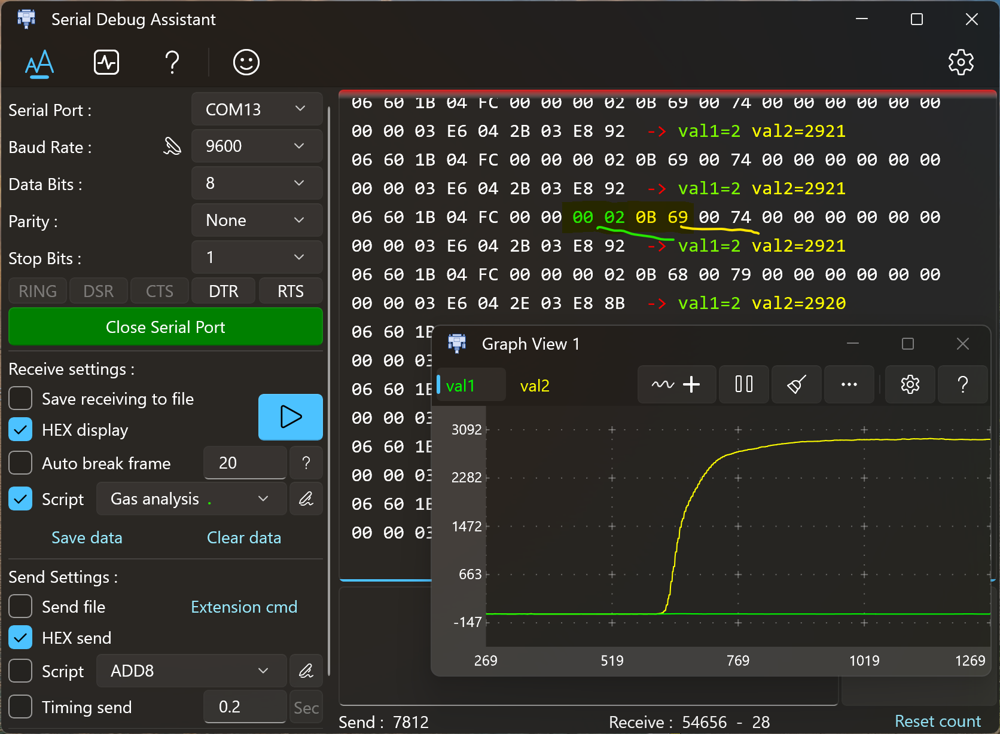
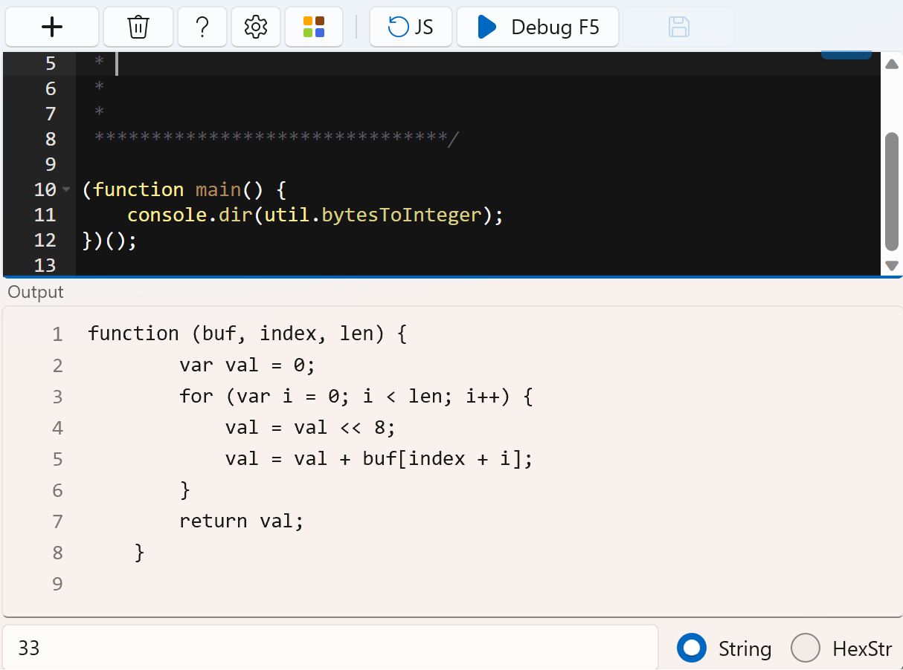

Js example
1. Parse the communication protocol and draw a curve
(function main() {
var str = receive.getString(); // Read the Received string
receive.write(str); // Prints the received characters
receive.write(" -> ", "red"); // Print the arrow
var buf = util.hexStringToBytes(str); // Turn the received hex string into an array.
var val1 = util.bytesToInteger(buf, 7, 2); // val1 Turn the array into integers by index and length
var val2 = util.bytesToInteger(buf, 9, 2); // val2
receive.write('val1=' + val1 + " ", "LawnGreen"); //Print the converted integer
receive.write('val2=' + val2, "yellow");
receive.write("\r\n"); //Print line breaks for easy observation.
chart.write("val1=" + val1 + "\n"); // Draw to waveform interface. The name is val1
chart.write("val2=" + val2 + "\n"); // Draw to waveform interface. The name is val2
})();

2. Gets the timestamp string
// Format 10:48:59.671 h:m:s.ms
function timeToString() {
let d = new Date();
let h = d.getHours().toString().padStart(2, '0');
let m = d.getMinutes().toString().padStart(2, '0');
let s = d.getSeconds().toString().padStart(2, '0');
let ms = d.getMilliseconds().toString().padStart(3, '0');
return h + ":" + m + ":" + s + "." + ms;
}
3. Convert hexadecimal string to decimal
/********************************
*
* Notes: Convert hexadecimal string to decimal
*
*
*
*
*******************************/
{
let str = receive.getString(); //Read the received string
receive.write(str); //output to receiving window
receive.write(" -> ", "DarkOrange"); //output arrow
let buf = util.hexStringToBytes(str); //Convert to byte array
let val = util.bytesToInteger(buf, 0, 2); // convert to int16;
console.log(val); //Print to output window
receive.write(val.toString(), "DarkOrange"); //Output the converted value
}
4. Convert integer to string
val = 10;
let str1 = val.toString(); //Convert decimal string '10'
let str2 = val.toString(16); //Convert hexadecimal string 'a'
let str3 = val.toString(8); //Convert octal string '12'
let str4 = val.toString(2); //Convert binary string '1010'
let str5 = val.toString(2).padStart(8, '0'); //Convert a binary string with less than 8 digits and fill it with '0' '00001010'
5. Print function source code
(function main() {
console.dir(util.bytesToInteger);
})();
